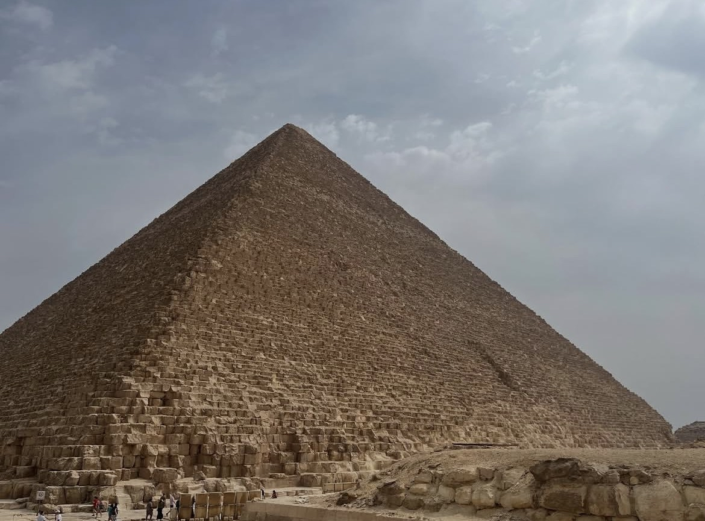
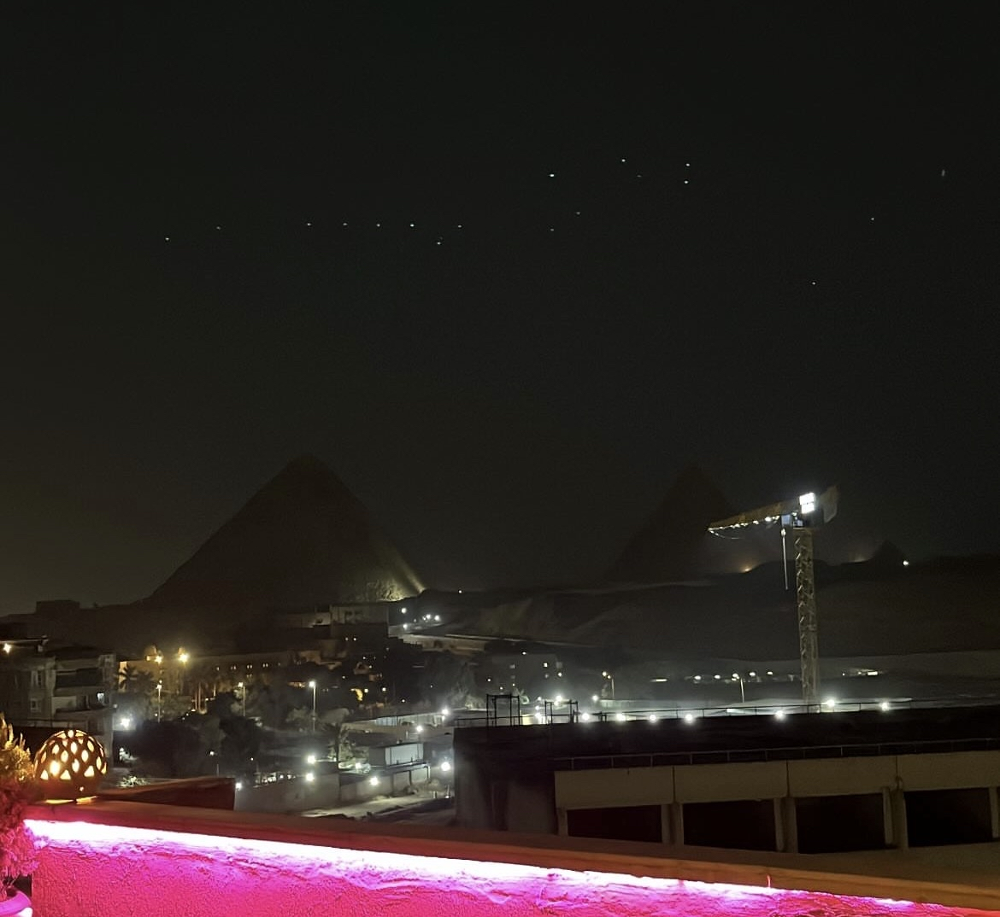
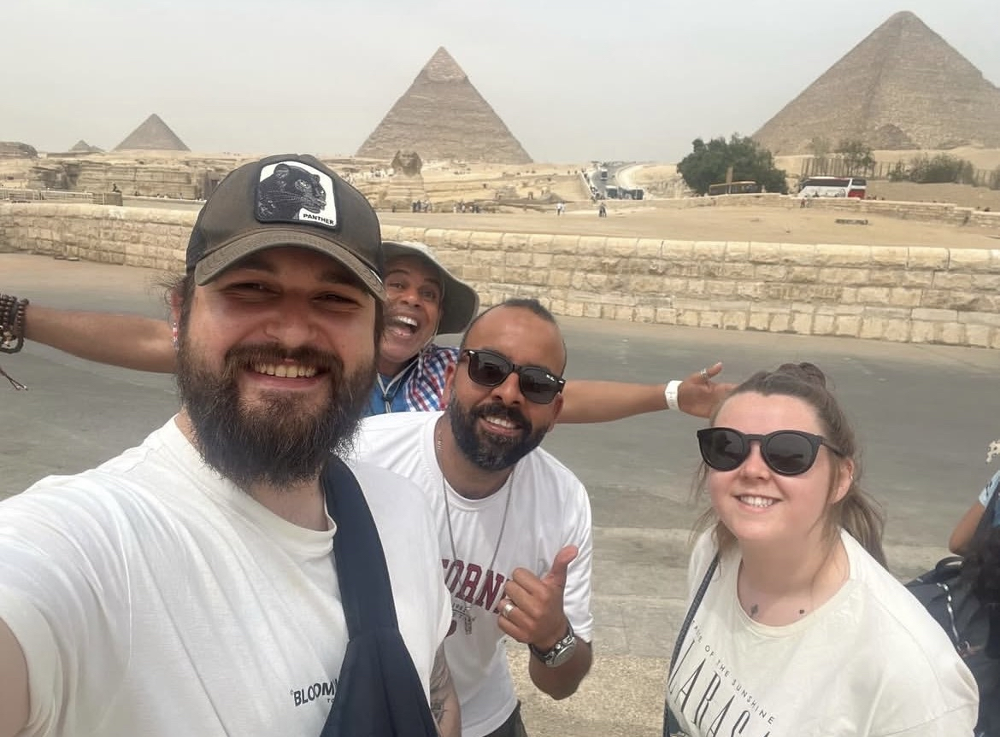
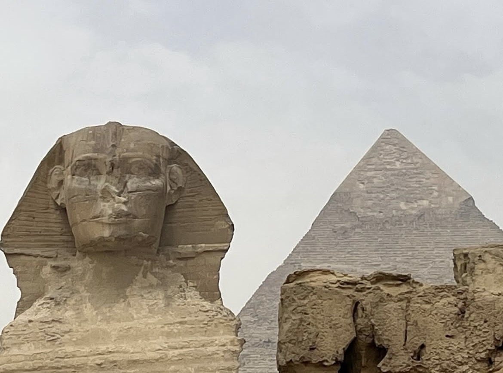
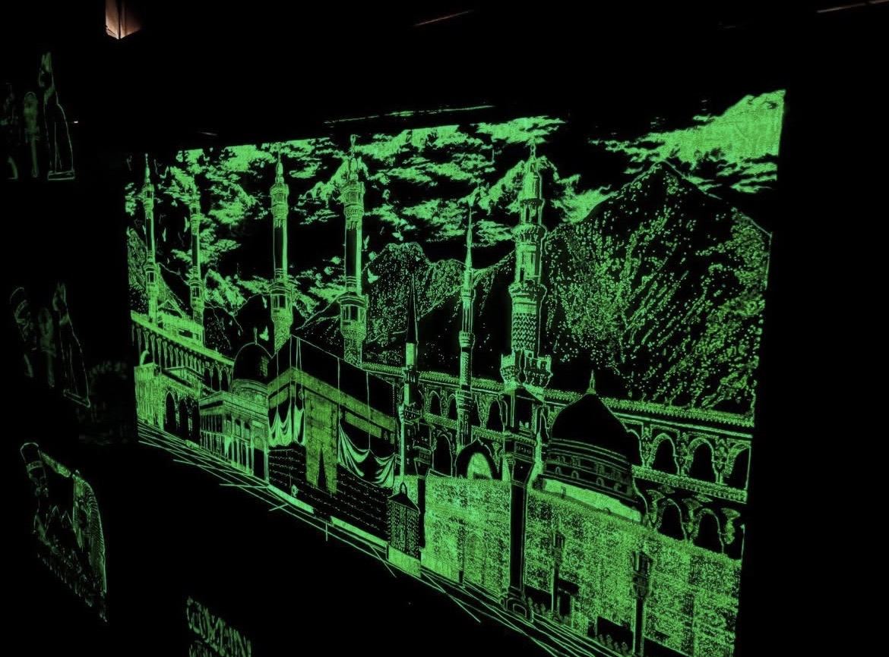
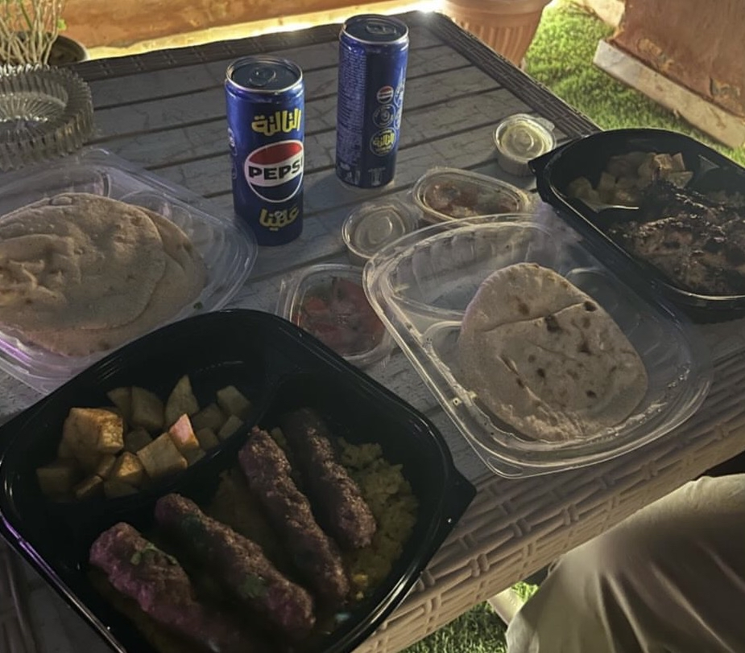
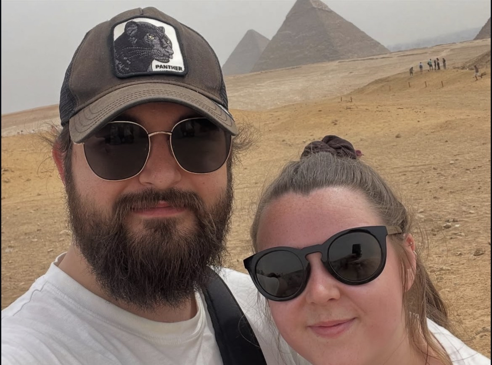

Harry and I only had one night in Egypt during our backpacking trip last year. We'd just flown in from Cyprus and were heading to Saudi Arabia the next day, so this was our tiny window to see one of the Seven Wonders of the Ancient World. After visiting 49 countries over four years, we've learned that sometimes you don't need weeks in a place to have an incredible experience. Sometimes 24 hours of pure bucket-list ticking is exactly what you need.
Those 24 hours at the Pyramids were absolutely surreal, but they also opened our eyes to some serious issues that every traveler needs to know about before visiting Giza.
Getting to Giza: Visa and Transport

We flew into Sphinx airport in April 2025 (the airport is gorgeous by the way, really modern and well-organized), and the first thing we had to sort was our visa on arrival. This is really important to know before you go. UK citizens need a visa to enter Egypt, and you can get it on arrival at the airport for $25 USD per person. Make sure you have cash in US dollars because they don't always accept cards. The process was straightforward, just a bit of queuing, but nothing too stressful. For the most up-to-date travel advice and requirements, check the UK government's Egypt travel guidance before you book.
We'd pre-arranged a hotel taxi pickup from the airport straight to our hotel in Giza, which honestly made everything so much easier. No stress about haggling with random taxi drivers or worrying about getting scammed. The drive took about 45 minutes depending on traffic, and before we knew it, we were pulling up to our hotel with the Pyramids literally in view.
Our Hotel: Waking Up to the Pyramids

We stayed at the Grand Pyramids Inn, and honestly, this might have been one of the best hotel deals we've ever gotten. £14.74 for one night with breakfast included. The room was basic, sure, but when you're waking up to views of the Pyramids from your balcony, who cares about fancy amenities?
The best part? They gave us a free upgrade to a room with a direct view of the Pyramids. Harry was out on that balcony taking photos constantly (he's our photographer, I'm the one making sure we don't get lost), and I don't blame him. There's something absolutely surreal about having your morning coffee while staring at structures that are over 4,500 years old.
The hotel is also right across from the Egyptian Museum, which looks absolutely incredible. It houses thousands of ancient Egyptian artifacts including Tutankhamun's treasures, mummies, and some of the most important archaeological finds in history. If you have more than 24 hours in Cairo, this should absolutely be on your list. It's one of those museums you could easily spend half a day exploring.
The Pyramid Tour: Everything You Need to Know
We booked our tour through GetYourGuide (we use them for pretty much all our tours now), and it cost £37 for both of us. The Giza Pyramids day tour included hotel pickup, a guide, and transport to all the main sites around the pyramid complex.

Having a guide made such a difference. They explained the history, the construction theories, and all the fascinating details that you'd completely miss if you just wandered around on your own. Plus, they navigate all the crowds and know the best spots for photos, which Harry absolutely appreciated.

Inside the Pyramids
We didn't go inside the Pyramids, which I know sounds mad when we traveled all that way. But here's the thing, it costs extra, you have to queue for ages, and we'd read that it's incredibly hot, claustrophobic, and honestly not that impressive inside compared to the exterior. With only 24 hours, we decided to spend our time experiencing the complex from the outside and soaking in the whole atmosphere instead.
If you've got more time and really want to go inside, absolutely do it. But if you're short on time like we were, don't feel like you're missing out massively by skipping it.
The Camel Situation: Please Read This Before You Go
Right, I need to address something really important that we witnessed during our tour. The treatment of the camels at Giza is heartbreaking. These animals are overworked, underfed, and clearly in distress. We watched camels being hit, forced to work in the extreme heat with no shade or water, and carrying tourists who have no idea about the suffering they're contributing to.
Please, please do not take a camel ride at the Pyramids. I know it seems like a classic tourist experience, but the welfare of these animals is shocking. They're not tourist attractions, they're living beings that deserve so much better. If you want to help, consider donating to ESMA (Egyptian Society for Mercy to Animals), a charity that works to improve the lives of working animals in Egypt. Even a small donation makes a real difference.
We knew about the camel situation before we went, which is why we made the conscious decision to avoid it entirely. I'm glad we did, but seeing it in person really hit home how important it is to speak up about this.
"The Pyramids are every bit as incredible as you imagine, but ethical travel matters more than the perfect photo."
Learning About Perfume Oils and Papyrus

Our tour included stops at a perfume oil workshop and a papyrus demonstration, which I actually found really interesting (Harry was less convinced, but humor me). The perfume oil place showed us how they create traditional Egyptian scents using natural ingredients, and honestly, some of them smelled incredible. They're not pushy about selling, but if you're into fragrances, it's worth checking out.
The papyrus demonstration showed us the traditional method of making papyrus paper from the papyrus plant. It's fascinating to see how they've been doing it for thousands of years, and you can buy some if you want a unique souvenir. Again, no pressure, just interesting to learn about.
The Food: What We Ate (And What You Should Try)

We only had time to try one proper meal during our 24 hours, and we went for kofta with yellow rice. Honestly, it was absolutely unreal. The kofta was perfectly spiced, juicy, and served with this fragrant yellow rice that I could have eaten about three plates of. Egyptian food is so cheap as well. Our meal cost us basically nothing compared to what we'd pay back home.
Recommended spots if you have more time:
- Abou Tarek (Downtown Cairo): Apparently the best koshari in Cairo. Koshari is Egypt's national dish (rice, lentils, pasta, chickpeas, and tomato sauce), and this place has been serving it since 1950.
- Felfela (multiple locations): Great for traditional Egyptian food including kofta, ful medames, and ta'ameya (Egyptian falafel).
- Kazaz (near the Pyramids): Local spot serving amazing grilled meats and mezze at really affordable prices.
- Andrea El Mariouteya (on the way to the Pyramids): Famous for their grilled chicken and pigeon, apparently a must-visit.
Safety in Egypt: Our Honest Experience
One thing that really surprised both Harry and me was how polite and welcoming the Egyptian people were. We'd heard mixed things before we went, but everyone we met was friendly, helpful, and genuinely seemed happy to have tourists visiting.
That said, you definitely need to be vigilant. Keep your belongings close, don't flash expensive cameras or jewelry around unnecessarily, and be aware of your surroundings, especially in crowded areas. We felt safe the entire time, but we were also cautious and sensible about it.
As a woman traveling with Harry, I didn't experience any issues, but I'd recommend dressing modestly (covering shoulders and knees) out of respect for the local culture and to avoid unwanted attention.
Egypt Budget Breakdown: What It Actually Cost
Before Arrival & Accommodation
- Visa on Arrival: $25 USD / person ($50 total)
- Grand Pyramids Inn: £14.74 (One night, breakfast included)
- Airport Pickup: Included in hotel booking
Daily Expenses
- Giza Pyramids Tour (GYG): £37 for both
- Meal (Kofta & Rice): ~£8 for both
- Total for 24 hours: ~£110 for both
Honestly, for seeing one of the Seven Wonders of the World and having an experience we'll never forget, that's incredibly affordable.
Practical Tips for Visiting the Pyramids
Best time to visit: We went in April and the weather was hot but manageable. Avoid summer (June-August) if you can because it's absolutely scorching. Winter (November-February) is meant to be ideal.
How long you need: If you're just doing the Pyramids like we did, one full day is enough. If you want to explore Cairo properly, give yourself 3-4 days.
What to bring: Sunscreen, hat, sunglasses, comfortable walking shoes, water bottle, and modest clothing.
Final Thoughts

Egypt might have been our shortest country visit out of 49, but it was one of the most memorable. The Pyramids are every bit as incredible as you imagine, the food is delicious and cheap, and the people are genuinely welcoming. Just please, if you visit, skip the camel rides. Those animals deserve so much better.
Would we go back? Absolutely. One night wasn't nearly enough, and we both left Egypt wanting to come back and explore properly. Next time we'd love to see the Valley of the Kings.